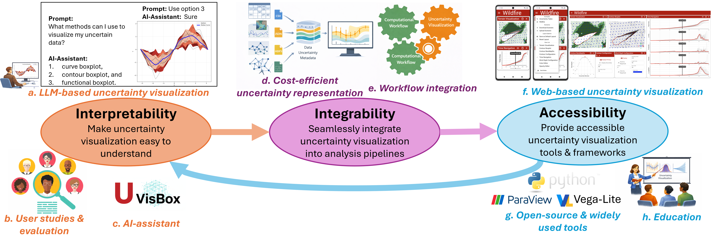

Uncertainty Visualization: How to Make it Interpretable, Integrable, and Accessible?
Uncertainty visualization has long been recognized as a research challenge essential to trustworthy scientific discovery and informed decision-making. Despite multiple advances in uncertainty visualization methods, their adoption in real-world workflows remains limited due to three key challenges: interpretability, integrability, and accessibility. This workshop seeks to deepen community understanding and define research priorities across these three areas.

The state-of-the-art uncertainty visualization methods leverage sophisticated representations (e.g., probabilistic mappings in scientific visualization or quantile dot plots in information visualization) that can impose significant cognitive demands and limit interoperability. When users cannot confidently interpret uncertainty encodings, they are less likely to integrate them into decision-making processes or analysis pipelines. At the system level, uncertainty propagation introduces additional complexity. Ambiguities arise in selecting appropriate data models (e.g., ranges versus distributions), choosing visualization methods for different data types (scalar, vector, and multivariate scientific or information data), and managing computational overhead. These challenges hinder integration into complex workflows that increasingly rely on AI, learning- based, or data-driven models. Moreover, the limited availability of uncertainty-aware functionality in widely adopted tools and software ecosystems (e.g., ParaView, VisIt, Vega-Lite, UpSet, and Python) constrains accessibility.
This year, we propose a more interactive structure featuring paper presentations, breakout discussions, and uncertainty-focused software demos (with sufficient backup plans) to directly tackle the identified bottlenecks. These formats are designed to stimulate interdisciplinary exchange across visualization, AI, high-performance computing, and human-centered computing experts, enabling them to articulate open challenges and define a forward-looking research agenda for deploying practical uncertainty-aware systems.
Previously, four successful workshops have taken place on the topic of uncertainty visualization in conjunction with IEEE VIS: at Vienna, Austria in 2025 (led by Tushar Athawale et al.); at St Pete Beach, USA in 2024 (led by Tushar Athawale et al.); at Chicago, USA in 2015 (led by Kristin Potter et al.); and at Rhode Island, USA in 2011 (led by Chris R. Johnson and Alex Pang). This is the fifth workshop to be held in conjunction with IEEE VIS.
To attend the Uncertainty Visualization workshop, please register through the IEEE VIS website.